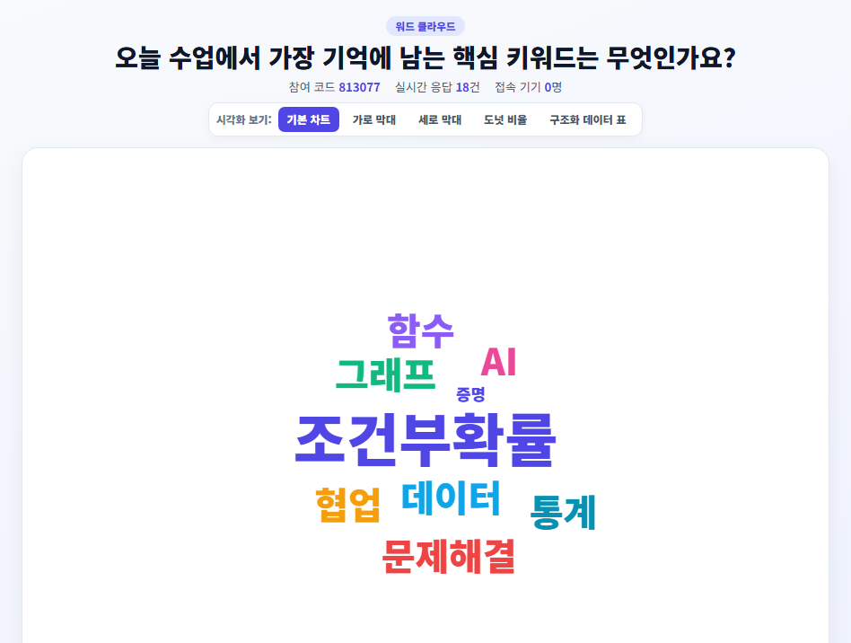
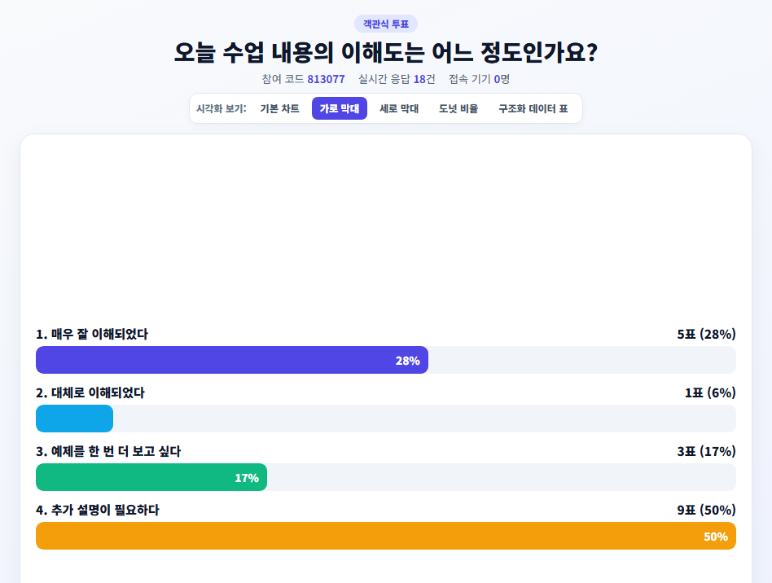
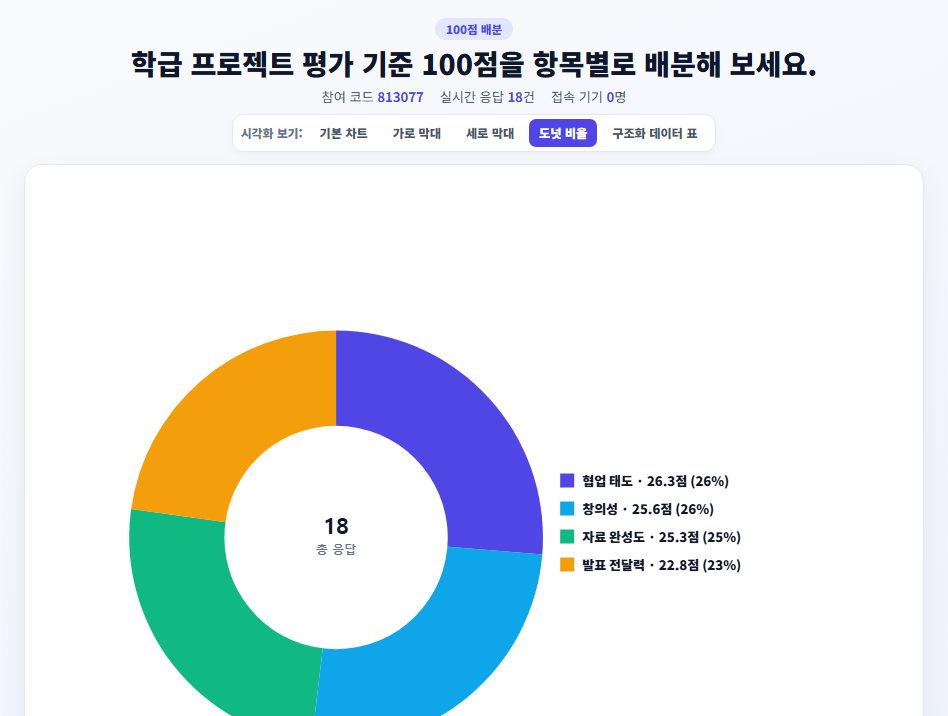
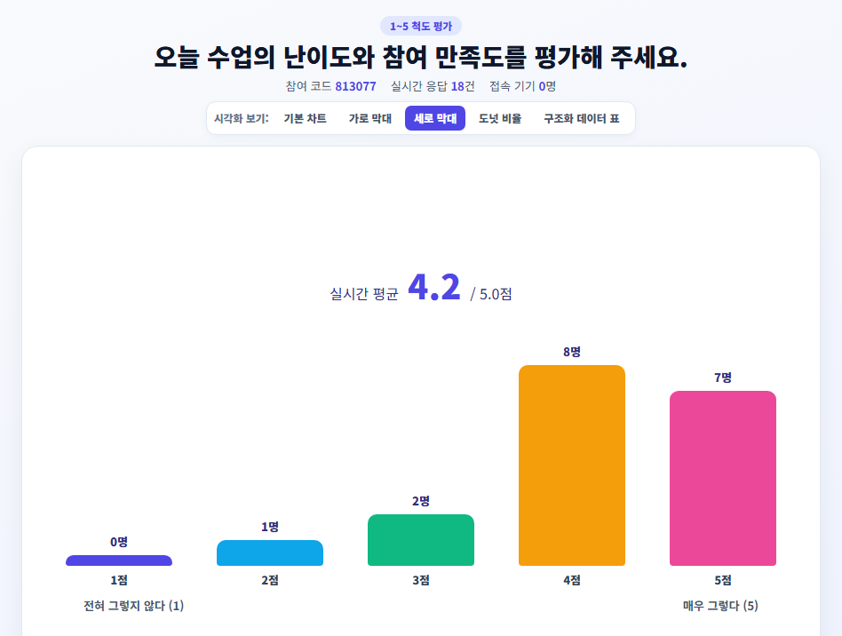
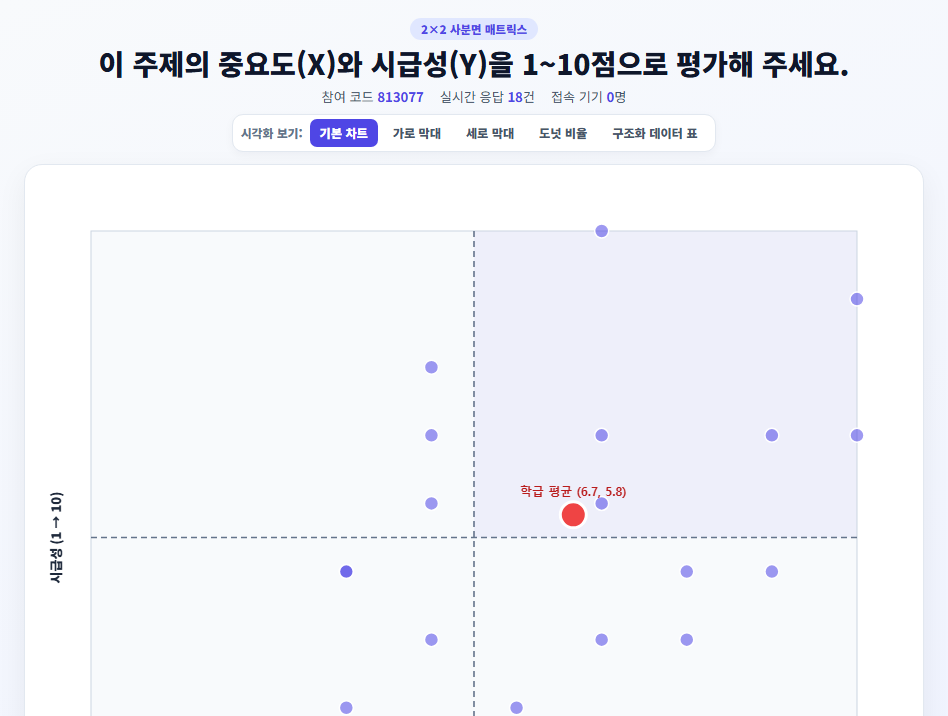

워드 클라우드
T-ong 멘티미터 Pro 완벽 가이드
사용 설명서 · 동시 접속 관리 · 데이터 시각화 안내
1. 30초 수업 시작하기
- 왼쪽 [+ 질문 추가]로 수업에 쓸 질문 슬라이드를 원하는 만큼 미리 만듭니다.
- 상단 [QR 참여코드] 또는 [전체화면 송출]을 눌러 교실 TV/프로젝터에 띄웁니다.
- 학생들이 스마트폰으로 QR을 1번만 스캔하면 됩니다. 이후 선생님이 [◀ 이전 / 다음 ▶]으로 질문을 넘길 때마다 학생 화면이 자동으로 전환됩니다.
- 투표 중 편향을 막으려면 [결과 가리기]를 켠 뒤, 응답이 모이면 [결과 공개]를 눌러 한 번에 보여주세요.
2. 멘티미터 전체 8가지 활동 유형
1. 워드 클라우드학생당 1~3개 핵심 키워드 입력 → 빈도별 크기 시각화 + 상위 키워드 클릭 제외
2. 객관식 투표2~6개 선택지 실시간 집계 → 가로/세로 막대·도넛·구조화 표 즉시 전환
3. 1~5 척도 평가이해도·만족도·동의도 1~5점 → 평균·표준편차·분포 그래프 자동 산출
4. 순위 매기기항목별 우선순위(1위~N위) → 가중 점수(Borda)로 학급 종합 순위 도출
5. 100점 배분총 100점을 항목별로 나눠 배분 → 평균 배분 비중 및 도넛 차트 시각화
6. 2×2 사분면 매트릭스X축(중요도)·Y축(시급성) 1~10점 → 2D 산점도 + 학급 평균 중심점 표시
7. 실시간 퀴즈 대결정답 체크 + 속도 보너스 점수 → 실시간 정답률 + Top 10 리더보드
8. 자유 의견 · Q&A학생 질문·의견을 실시간 카드로 수집 + 공감(하트) 및 부적절 글 삭제
3. 동시 접속자 수 권장 기준 및 선생님별 개별 독립 사용 안내
- 모든 선생님이 100% 개별 독립 사용 가능: 전국 여러 선생님이 같은 사이트에 동시에 접속해도 각 선생님의 브라우저에만 데이터가 저장되고, 고유한 6자리 방 코드가 개별 발급되므로 반별 수업 데이터가 절대 섞이지 않습니다.
- 1개 방 기준 권장 동시 접속 인원:
· 1~40명 (일반 학급 1개 반): 매우 쾌적 (0.1초 이내 실시간 반영)
· 41~60명 (2개 반 합반 · 소강당): 원활 (배치 렌더링 자동 작동)
· 60명 초과 (전교생 · 대강당 100명 이상): 교사 PC 1대의 P2P 연결 한계로 일부 지연이 생길 수 있어 반별·학년별로 방을 나누어 진행하는 것을 권장합니다. - 실시간 접속자 수 확인 & 1인 1회 제한: 상단 [접속 중 N명] 배지로 현재 연결된 학생 기기 수를 확인하고, [1인 1회: ON]으로 중복 투표를 방지할 수 있습니다.
4. 교사용 결과 다운로드 · 수업 백업/불러오기 · 보고서 출력
- 현재/전체 엑셀(CSV) 다운로드: 한글 깨짐 없는 UTF-8 BOM 형식으로 현재 질문 또는 전체 질문 결과를 엑셀 파일로 바로 내려받습니다.
- 수업 백업(.json) / 불러오기: 집이나 교무실에서 미리 만든 질문 세트(또는 수업 후 응답 포함 데이터)를 파일로 저장해 두었다가 교실 PC에서 그대로 불러와 이어서 수업할 수 있습니다.
- 차트 PNG 저장 & A4 PDF 보고서: 워드클라우드·도넛·2×2 차트를 이미지로 저장하거나, 전체 슬라이드 통합 A4 PDF 보고서로 인쇄·보관할 수 있습니다.
5. 모의 학생 18명 응답 시뮬레이션 예시 화면
실제 수업에서 학생 18명이 QR로 응답했을 때 시각화되는 화면 예시입니다. (왼쪽의 [모의 학생 18명 응답 체험] 버튼으로 직접 시연해 볼 수 있습니다.)




